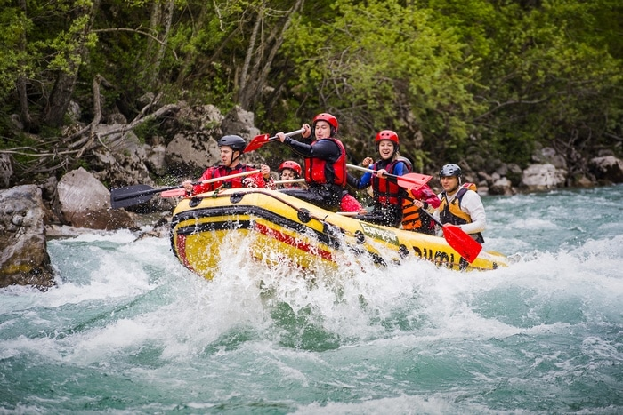

Mejores Actividades para realizar en Ecuador
Ecuador conocido por su, Gastronomia y diversion ,para turistas y locales asi como tambien una
diversion sana y actividades extremas Ecuador se centra para la diversion de todo tipo asi como tambien
lugares azombroso creados por la madre naturaleza que nos da favoritismo y increibles Paisajes entro de nuestro Ecuador

Actividades para realizar dentro del ECUADOR.
Empezamos con los Andes, las mejores caminatas del Ecuador, unas de las ciudades más hermosas para visitar,
Ecuador se encuentra en la línea ecuatorial, y recomiendo que visite el “centro del mundo” Oficial, el Museo Intiñan, el punto central de origen.
Mindo es un pequeño pueblo a dos horas al norte de Quito, el mejor lugar para la observación de aves
(más de 500 especies de aves) y aventuras (con canopy de 10 km, descenso de cascadas y regatas en ríos).
Otavalo, ubicado a dos horas al norte de Quito, tiene el mercado indígena más grande de América del Sur, es el lugar donde ir si usted quiere comprar regalos
El Volcán Cotopaxi es uno de los volcanes activos más altos del mundo, con sus 5’897 metros (19.347 pies).
siendoe estos lugares de los mas visitados y con mayor actividad dentro de ecuador y sus magnificas
sitios con comercio y dicha para realizar actividades para su relajacion
.
Mejores Actividades en Ecuador
Bungee Jumping, saltar de un puente en Baños BEl puente de Río Blanco tiene 35 metros de altura, pero la joya de la corona es
el puente de San Francisco. Sus 120 metros de altura.
El Columpio de la Casa del Árbol Hoy en día es tan popular que lo más probable es que tengas que hacer cola para probarlo
Pailón del Diablo. Además de ser una de las más espectaculares, te ofrece la posibilidad de verla desde muchos puntos de vista diferentes e incluso entrar en su interior
Ruta en bicicleta El recorrido más popular es el que conecta Baños de Agua Santa con Río verde, aproximadamente 20 kilómetros.